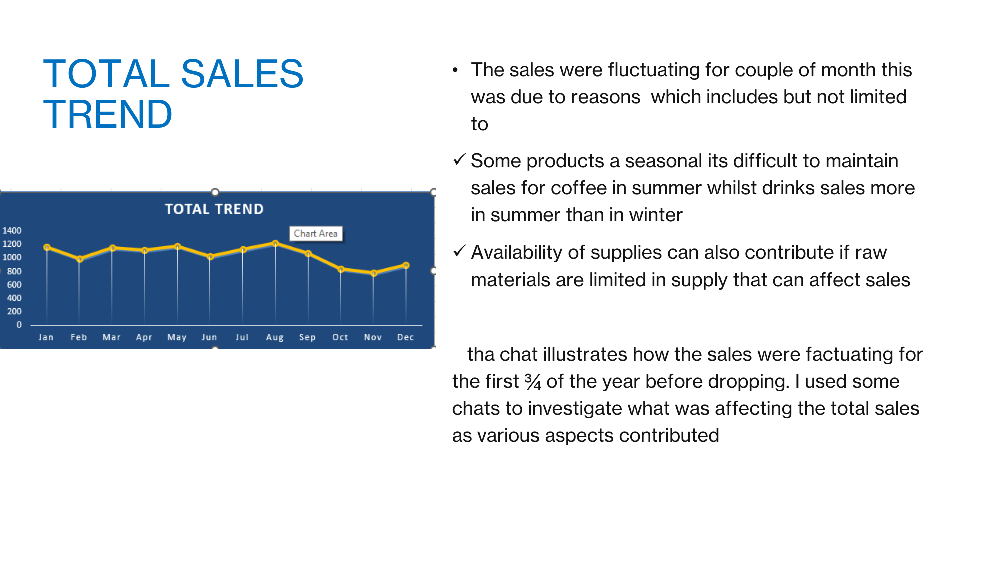
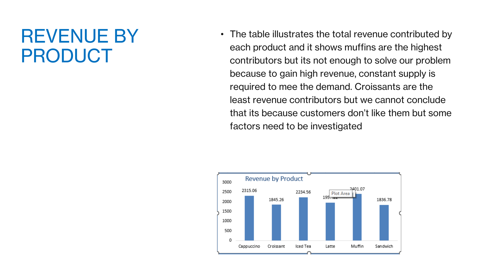
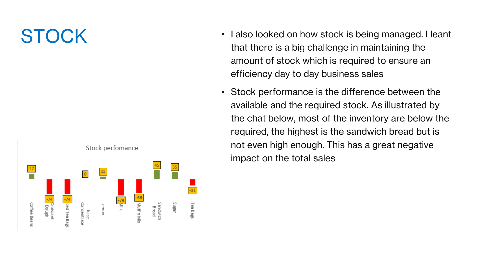
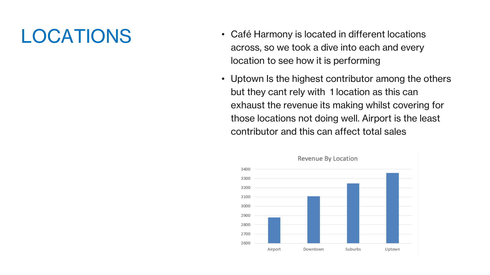
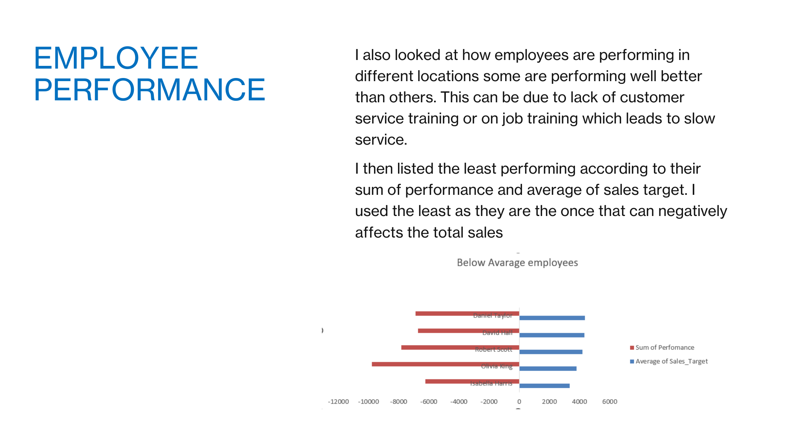
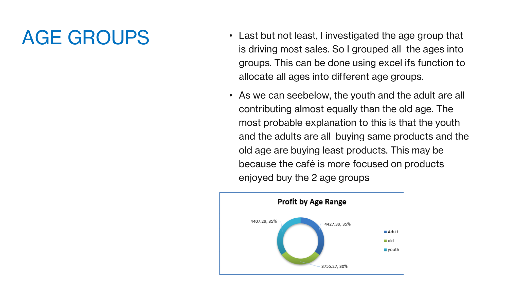

Background
Café Harmony is a café chain specialising in drinks, snacks and light meals. It has grown rapidly since its establishment, but it is now struggling to meet demand across its city-wide branches. The investigation drew on five datasets: sales transactions across locations, customer demographics and preferences, employee records, stock and inventory levels, and customer feedback ratings.
Total Sales Trend

Sales fluctuated across the first three quarters of the year before dropping off. Two factors stood out: seasonality (coffee sells better in winter, cold drinks in summer) and supply availability — when raw materials run short, sales suffer regardless of demand.
Revenue by Product

Muffins are the top revenue contributor, but that alone doesn't solve the demand problem — sustaining that revenue requires a constant, reliable supply. Croissants contribute the least revenue; that isn't necessarily a preference issue, since supply-side factors could equally be responsible and need separate investigation.
Stock Management

Stock performance measures the gap between available and required inventory. Most ingredients sit below the required level — croissant dough and iced tea bags are each 74 units short, milk is 79 short, and muffin mix is 66 short. Even the best-stocked item, sandwich bread, isn't comfortably ahead. These shortfalls directly constrain sales.
Location Performance

Uptown is the strongest location, but relying on one branch to offset weaker ones isn't sustainable — it risks exhausting that location's own capacity. Airport is the weakest contributor and a drag on total sales.
Employee Performance

Performance varies notably by location, likely linked to gaps in customer-service or on-the-job training that slow down service. The chart highlights the employees furthest below target, since they have the most negative pull on total sales.
Age Groups

Grouping transactions by customer age (using Excel's IFS function) shows youth and adult customers contributing almost equally, with older customers contributing noticeably less — likely because the current menu skews toward what the two younger groups prefer.
Recommendations
- Grow sales of the least-purchased product by improving or diversifying it to win over customers who currently skip it.
- Improve stock management so required raw materials stay available — including sourcing alternate suppliers and running regular stock takes to avoid shortages.
- Investigate the bottlenecks behind under-performing locations, and rotate staff from strong-performing branches to help close the gap.
- Introduce on-the-job training for lower-performing employees, alongside incentives and rewards for strong or improving performance.
- Maintain or improve supply of the products favoured by youth and adult customers, while checking whether older customers are being underserved by current product choices.